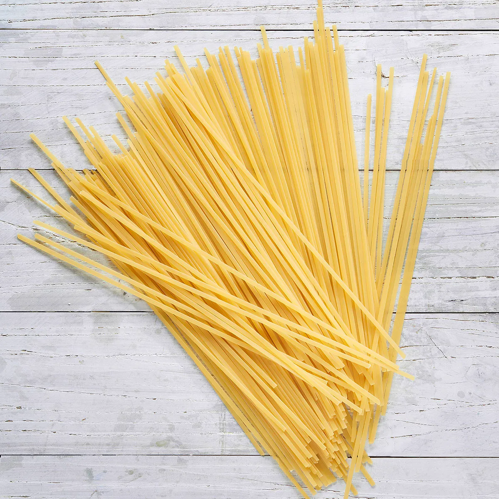
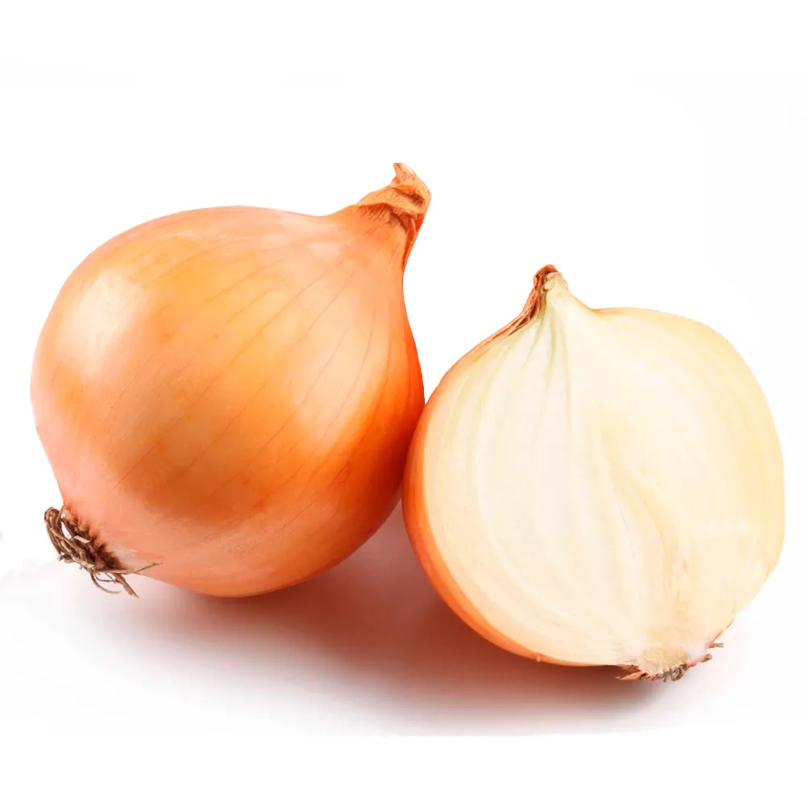
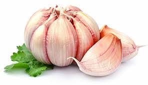
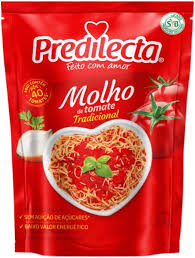

Um Pouco Sobre a Nossa Culinária
Primeiramente sejam Bem Vindos ao nosso site, aqui nós vamos aprender um pouco sobre pratos deliciosos!
Iremos testar receitas tanto de nossa região quanto de vários locais de nosso planeta, o nosso objetivo aqui é fazer comidas
maravilhosas e deixar nossas barrigas felizes! Então aqui vamos separar 3 receitas doces e salgadas para se adequar melhor aos
seus gostos, vamos contar com vídeos de profissionais para te auxiliar em qualquer dúvida e te acompanhar durante as receitas.
Te desejamos uma ótima experiência e agora MÃOS NA MASSA!!

Pois bem após nossa introdução podemos começar ordendo por onde começaremos e cada passo a passo.
Antes de começarmos acho importante resltar como cada etapa funciona com elas separadas em 4 etapas, assim sendo:
- PLANEJAMENTO
- onde iremos escolher o prato desejado para o preparo
- MISE EN PLACE
- onde vamos organizar e separar os ingredientes e utensílios necessários
- PREPARO
- nada mais nada menos que o começo da nosso prato, onde temos que seguir a todo momento a receita
- FINALIZAÇÃO
- onde avaliamos nosso preparo e finalmente desfrutamos do nosso delicioso esforço
Receita Número 1: Espaguete

Foi no século 9 que o espaguete aportou na Sicília, levado pelos árabes em sua incursão de conquista da ilha.
As primeiras receitas do prato incluíam sardinhas pescadas ali mesmo no porto da região.
Só bem mais tarde o molho de tomate se consagrou como um parceiro clássico da massa. E assim dando vida a receita que todos
conhecemos e amamos. Agora vamos para a receita!
Ingredientes (10 porções)
macarrão espaguete

1 pacote de espaguete
água
1 litro de água
cebola

1 cebola pequena
alho

6 dentes de alho
óleo
óleo para fritar
molho de tomate

molho de tomate
mostarda
 1 colher (sopa) de mostarda
1 colher (sopa) de mostarda
pimente-do-reino
 orégano
orégano seco
orégano
orégano seco
Modo de Preparo 40min
1:
Ferva a água e o óleo em uma panela.
2:
Depois de a água começar a borbulhar, adicione o pacote de espaguete.
3:
Faça o molho em uma outra panela: coloque o alho a cebola e o óleo para fritar.
4:
Quando o alho e a cebola estiverem fritando, acrescente o molho de tomate.
5:
Em seguida, adicione a mostarda, a pimenta-do-reino a gosto e o orégano.
6:
Depois que o molho estiver pronto, desligue o fogo.
7:
Mexa o macarrão de 5 em 5 minutos para não queimar nem grudar.
8:
Escorra o macarrão e adicione o molho e, para enfeitar, acrescente o manjericão que fica uma delícia.
9:
sirva em um prato.